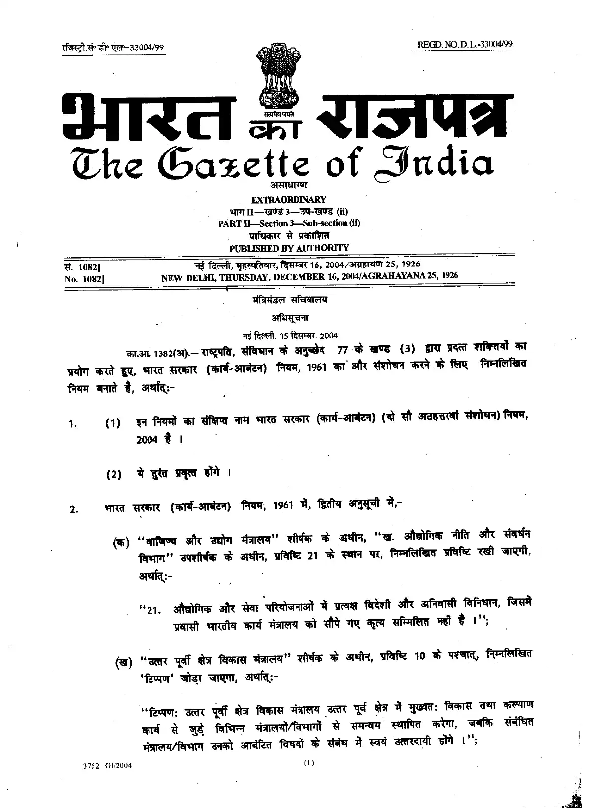
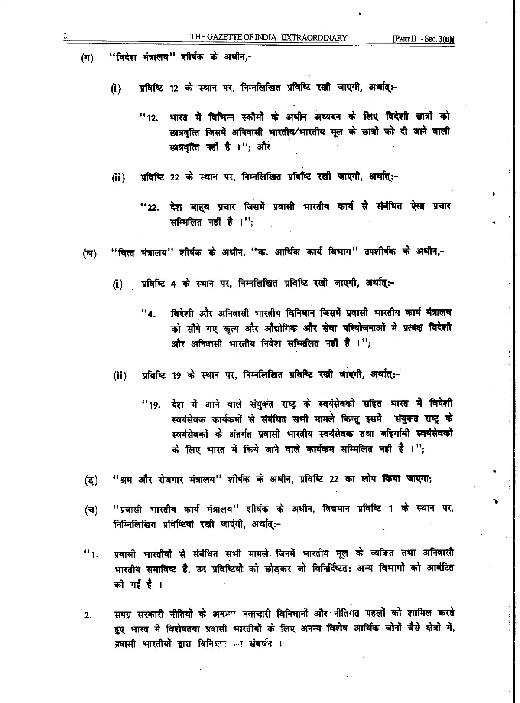
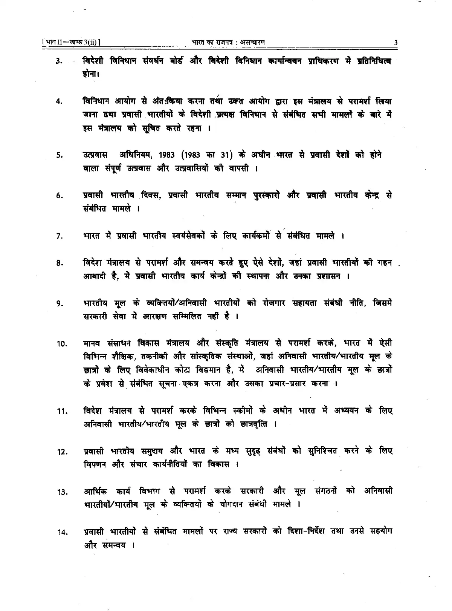
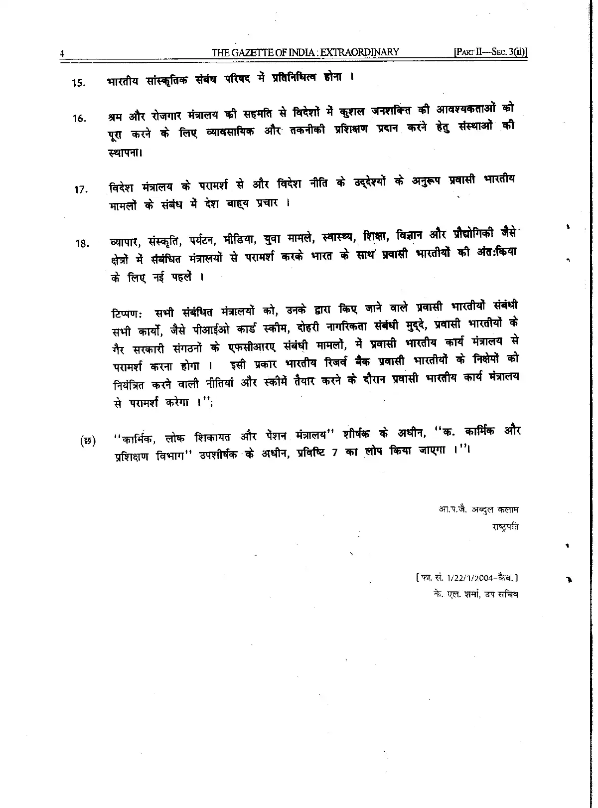
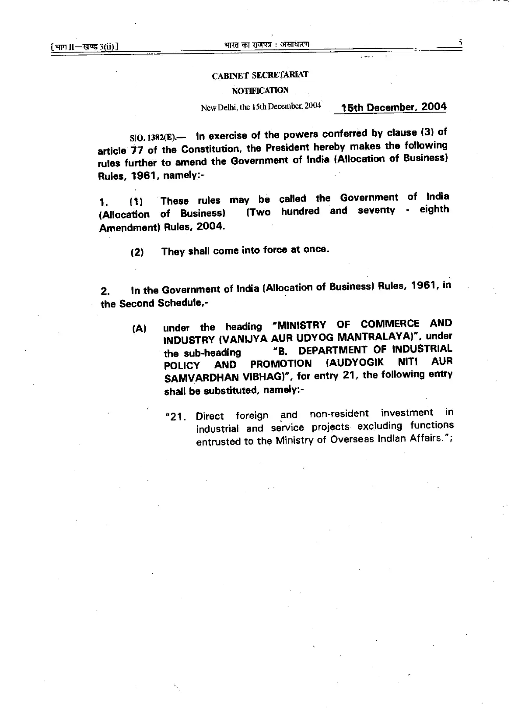
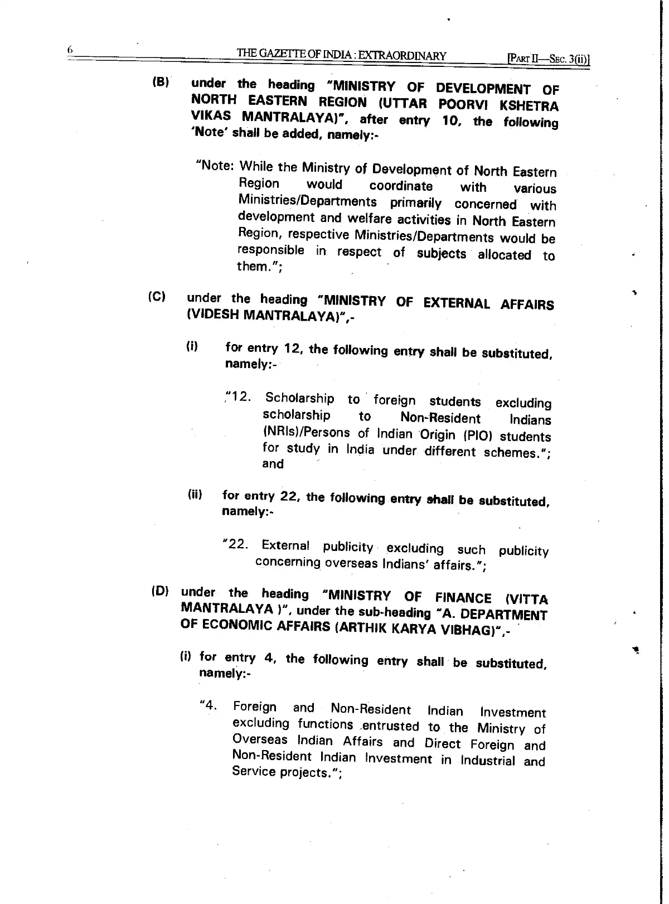
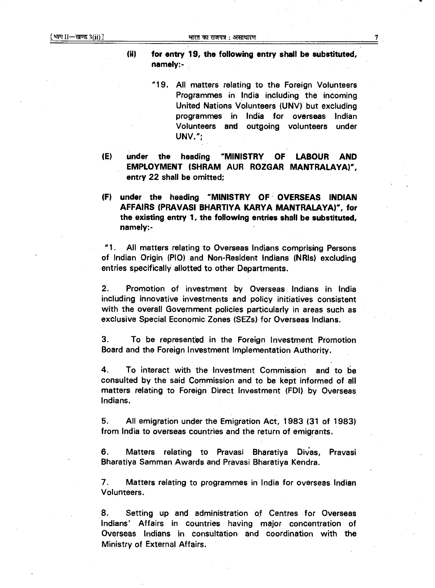
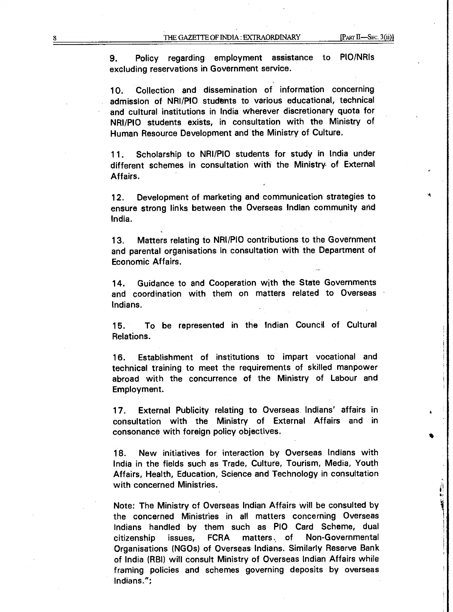
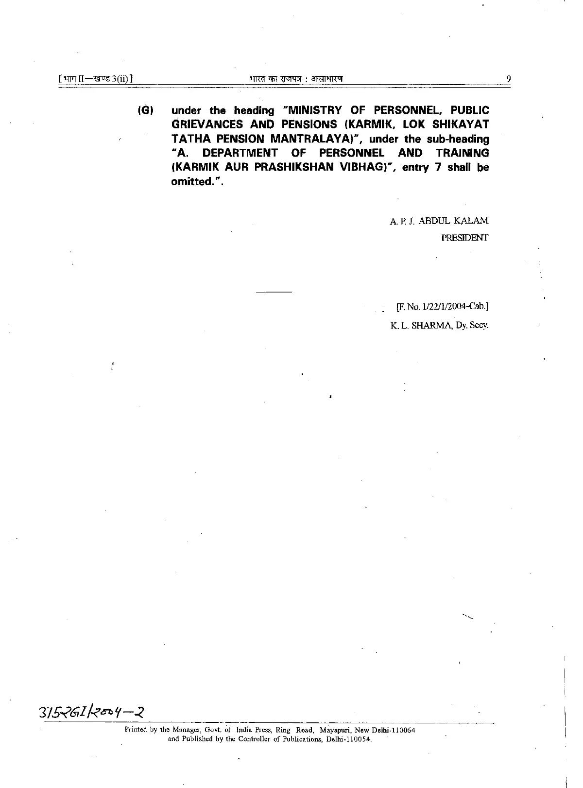

Amendment #278 (S.O. 1382(E), 2004)
9 changes: 0 to the First Schedule, 9 to the Second Schedule. 9 applied
What it did to the ministries
- grewMinistry of Overseas Indian Affairs grows from 1 to 18 subjects change 8 · histories: Overseas Indian Affairs
The order, page by page
Page 1 of 9

Page 2 of 9

Page 3 of 9

Page 4 of 9

Page 5 of 9

1Schedule 2 › MINISTRY OF COMMERCE AND INDUSTRY › DEPARTMENT OF INDUSTRIAL POLICY AND PROMOTION › entry 21
- 21. Direct foreign and non-resident investment in industrial and service projects excluding functions entrusted to the Ministry of Overseas Indian Affairs.
applied at schedule 2 › ministry MINISTRY OF COMMERCE AND INDUSTRY › department B › group_heading II › entry 21 in the Rules after #278
Page 6 of 9

2345after Schedule 2 › MINISTRY OF DEVELOPMENT OF NORTH EASTERN REGION › entry 10
- Note: While the Ministry of Development of North Eastern Region would coordinate with various Ministries/Departments primarily concerned with development and welfare activities in North Eastern Region, respective Ministries/Departments would be responsible in respect of subjects allocated to them.
applied at schedule 2 › ministry MINISTRY OF DEVELOPMENT OF NORTH EASTERN REGION › entry 10 in the Rules after #278
Schedule 2 › MINISTRY OF EXTERNAL AFFAIRS › entry 12
- 12. Scholarship to foreign students excluding scholarship to Non-Resident Indians (NRIs)/Persons of Indian Origin (PIO) students for study in India under different schemes.
applied at schedule 2 › ministry MINISTRY OF EXTERNAL AFFAIRS › entry 12 in the Rules after #278
Schedule 2 › MINISTRY OF EXTERNAL AFFAIRS › entry 22
- 22. External publicity excluding such publicity concerning overseas Indians' affairs.
applied at schedule 2 › ministry MINISTRY OF EXTERNAL AFFAIRS › entry 22 in the Rules after #278
Schedule 2 › MINISTRY OF OF FINANCE › DEPARTMENT OF ECONOMIC AFFAIRS › entry 4
- 4. Foreign and Non-Resident Indian Investment excluding functions entrusted to the Ministry of Overseas Indian Affairs and Direct Foreign and Non-Resident Indian Investment in Industrial and Service projects.
applied at schedule 2 › ministry MINISTRY OF FINANCE › department A › group_heading I › entry 4 in the Rules after #278
Page 7 of 9

678Schedule 2 › MINISTRY OF OF FINANCE › DEPARTMENT OF ECONOMIC AFFAIRS › entry 19
- 19. All matters relating to the Foreign Volunteers Programmes in India including the incoming United Nations Volunteers (UNV) but excluding programmes in India for overseas Indian Volunteers and outgoing volunteers under UNV.
applied at schedule 2 › ministry MINISTRY OF FINANCE › department A › group_heading II › entry 19 in the Rules after #278
Schedule 2 › MINISTRY OF LABOUR AND EMPLOYMENT › entry 22
applied at schedule 2 › ministry MINISTRY OF LABOUR AND EMPLOYMENT › part V › entry 22 in the Rules after #278
Schedule 2 › MINISTRY OF OVERSEAS INDIAN AFFAIRS › entry 1
- 1. All matters relating to Overseas Indians comprising Persons of Indian Origin (PIO) and Non-Resident Indians (NRIs) excluding entries specifically allotted to other Departments.
- 2. Promotion of investment by Overseas Indians in India including innovative investments and policy initiatives consistent with the overall Government policies particularly in areas such as exclusive Special Economic Zones (SEZs) for Overseas Indians.
- 3. To be represented in the Foreign Investment Promotion Board and the Foreign Investment Implementation Authority.
- 4. To interact with the Investment Commission and to be consulted by the said Commission and to be kept informed of all matters relating to Foreign Direct Investment (FDI) by Overseas Indians.
- 5. All emigration under the Emigration Act, 1983 (31 of 1983) from India to overseas countries and the return of emigrants.
- 6. Matters relating to Pravasi Bharatiya Divas, Pravasi Bharatiya Samman Awards and Pravasi Bharatiya Kendra.
and 13 more
- 7. Matters relating to programmes in India for overseas Indian Volunteers.
- 8. Setting up and administration of Centres for Overseas Indians' Affairs in countries having major concentration of Overseas Indians in consultation and coordination with the Ministry of External Affairs.
- 9. Policy regarding employment assistance to PIO/NRIs excluding reservations in Government service.
- 10. Collection and dissemination of information concerning admission of NRI/PIO students to various educational, technical and cultural institutions in India wherever discretionary quota for NRI/PIO students exists, in consultation with the Ministry of Human Resource Development and the Ministry of…
- 11. Scholarship to NRI/PIO students for study in India under different schemes in consultation with the Ministry of External Affairs.
- 12. Development of marketing and communication strategies to ensure strong links between the Overseas Indian community and India.
- 13. Matters relating to NRI/PIO contributions to the Government and parental organisations in consultation with the Department of Economic Affairs.
- 14. Guidance to and Cooperation with the State Governments and coordination with them on matters related to Overseas Indians.
- 15. To be represented in the Indian Council of Cultural Relations.
- 16. Establishment of institutions to impart vocational and technical training to meet the requirements of skilled manpower abroad with the concurrence of the Ministry of Labour and Employment.
- 17. External Publicity relating to Overseas Indians' affairs in consultation with the Ministry of External Affairs and in consonance with foreign policy objectives.
- 18. New initiatives for interaction by Overseas Indians with India in the fields such as Trade, Culture, Tourism, Media, Youth Affairs, Health, Education, Science and Technology in consultation with concerned Ministries.
- Note: The Ministry of Overseas Indian Affairs will be consulted by the concerned Ministries in all matters concerning Overseas Indians handled by them such as PIO Card Scheme, dual citizenship issues, FCRA matters of Non-Governmental Organisations (NGOs) of Overseas Indians. Similarly Reserve Bank…
applied at schedule 2 › ministry Ministry of Overseas Indian Affairs (Pravasi Bhartiya Karya Mantralaya) › entry 1 in the Rules after #278
read page break
Page 8 of 9

Page 9 of 9

9Schedule 2 › MINISTRY OF PERSONNEL, PUBLIC GRIEVANCES AND PENSIONS › DEPARTMENT OF PERSONNEL AND TRAINING › entry 7
applied at schedule 2 › ministry MINISTRY OF PERSONNEL, PUBLIC GRIEVANCES AND PENSIONS › department A › group_heading I › entry 7 in the Rules after #278
How this document was read
From the Government of India (Allocation of Business) Rules, 1961 and their amendments, as published by the Cabinet Secretariat (cabsec.gov.in), read by orgpedia. The readings of the older scanned gazettes have known gaps.